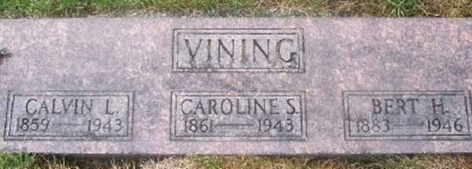

Census Data
| 1900 | 1910 | 1920 | 1930 | 1940 | |
| Calvin Luther Vining | 41 | 51 | 60 | 71 | 81 |
| Caroline (Price) Vining | 38 | 48 | 58 | 68 | 78 |
| Bert H. Vining | 17 | married and living in separate household | |||
| Howard E. Vining | 10 | living in separate household | ? | 40 | dead |


Death Data
Headstone of Calvin Luther Vining, wife Caroline (Price) Vining, and son Bert H. Vining, in Marysville Cemetery, Marysville, Snohomish County, Washington: